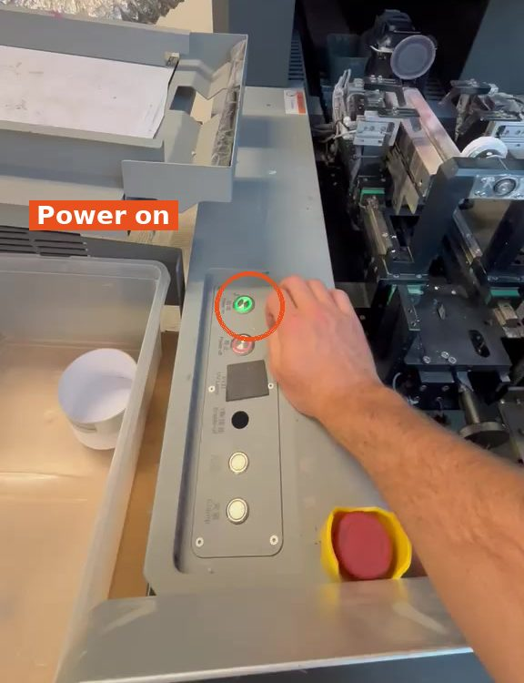
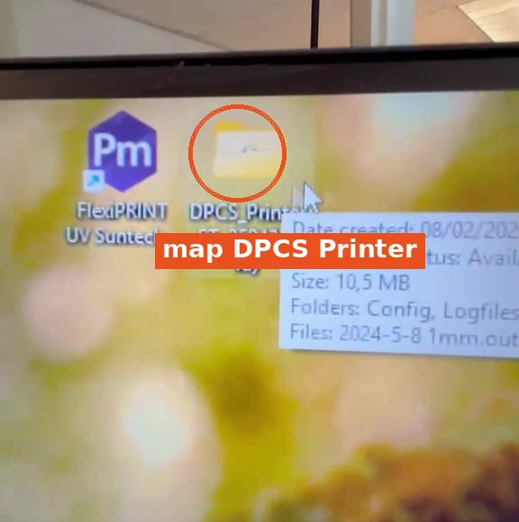
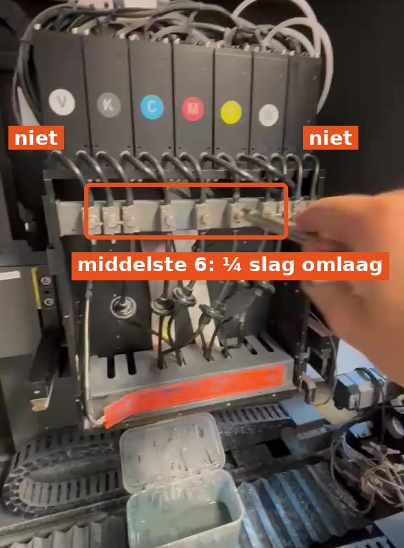
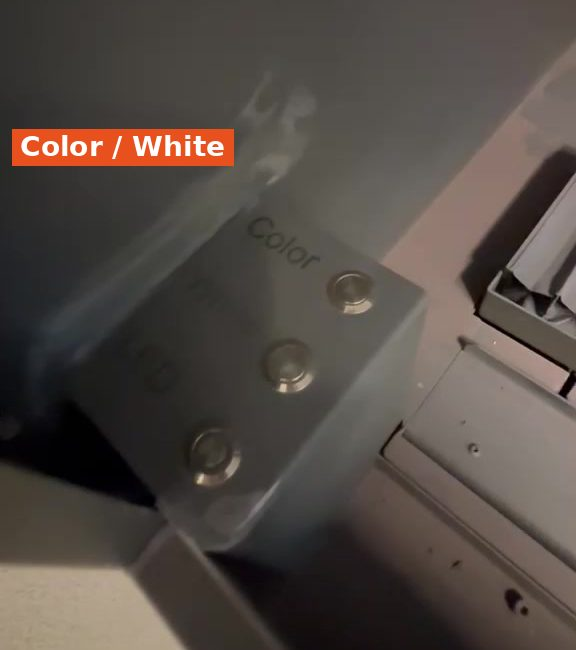
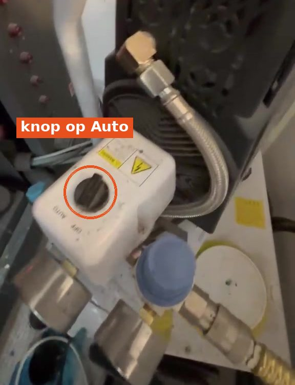
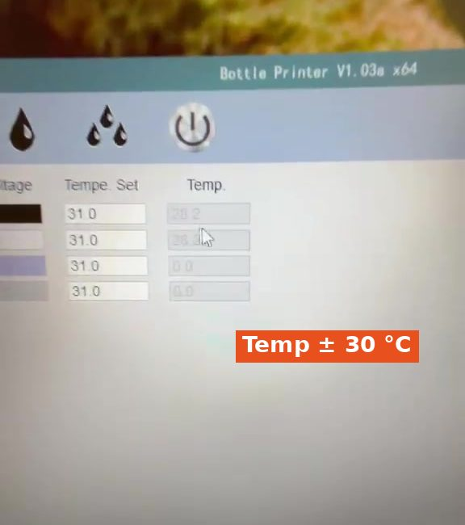

1
Machine en computer aanzetten
- Druk op Power on.
- Zet de computer aan.

Zo zet je de flessenprinter aan en maak je hem klaar om te printen. Geldt voor Bottle 1 en Bottle 2: dat zijn dezelfde printers. Doe de stappen voor beide machines.
Nodig: non-dust cloth (pluisvrij doekje) · PC-code: 1997







Druk langer. Maak de printkop soms extra schoon (stap 6) en doe het opnieuw.



Niet vergeten bij deze printer!


Doe stap 1 t/m 9 ook voor de andere machine (Bottle 1 en Bottle 2).
✓ Klaar om te printen.